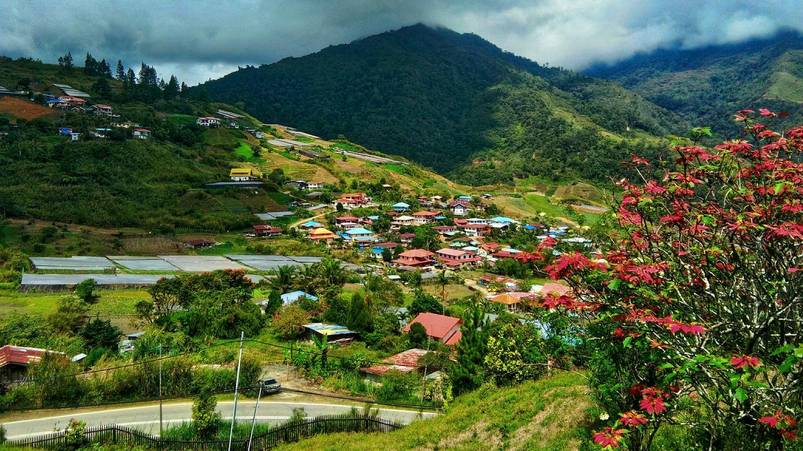

Kundasang

Kundasang terkenal dengan pemandangan Gunung Kinabalu dan ladang sayur-sayuran segar.
Kundasang terkenal dengan pemandangan Gunung Kinabalu dan ladang sayur-sayuran segar.
Pulau Sipadan adalah syurga penyelam dengan terumbu karang dan hidupan laut yang menakjubkan.
Taman laut yang terdiri daripada beberapa pulau kecil sesuai untuk snorkeling dan aktiviti pantai.
Mercu tanda bersejarah di Kota Kinabalu yang dibina pada tahun 1905.